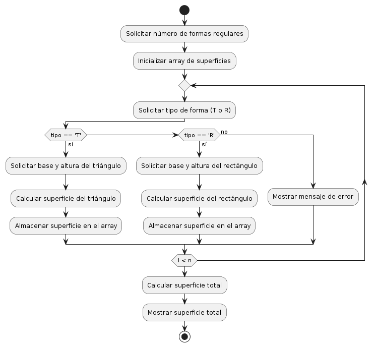

Superficie de una Figura Irregular
Teoría
Una figura irregular es aquella que no se puede clasificar como una figura geométrica común, como un cuadrado, rectángulo o círculo. Calcular la superficie de una figura irregular puede ser más complejo que para figuras regulares.
Para calcular la superficie de una figura irregular, se pueden utilizar diferentes métodos:
- Método de aproximación: Dividir la figura en formas regulares (triángulos, rectángulos, etc.) y sumar las áreas de estas formas.
- Método de integración: Si la figura se puede describir con una función matemática, se puede utilizar integración para encontrar el área bajo la curva.
- Método de Monte Carlo: Generar puntos aleatorios dentro de la figura y usar la proporción de puntos dentro de la figura con respecto al total para estimar el área.
Diagrama de Flujo
Ejemplo de Código en C
#include <stdio.h>
#include <math.h>
float calcularSuperficieTriangulo(float base, float altura) {
return 0.5 * base * altura;
}
float calcularSuperficieRectangulo(float base, float altura) {
return base * altura;
}
float calcularSuperficieFiguraIrregular(float superficies[], int n) {
float superficieTotal = 0;
for (int i = 0; i < n; i++) {
superficieTotal += superficies[i];
}
return superficieTotal;
}
int main() {
int n;
printf("Ingrese el número de formas regulares que componen la figura irregular: ");
scanf("%d", &n);
float superficies[n];
char tipo;
float base, altura;
for (int i = 0; i < n; i++) {
printf("Ingrese el tipo de forma regular (T para triángulo, R para rectángulo): ");
scanf(" %c", &tipo);
if (tipo == 'T') {
printf("Ingrese la base y la altura del triángulo %d: ", i + 1);
scanf("%f %f", &base, &altura);
superficies[i] = calcularSuperficieTriangulo(base, altura);
} else if (tipo == 'R') {
printf("Ingrese la base y la altura del rectángulo %d: ", i + 1);
scanf("%f %f", &base, &altura);
superficies[i] = calcularSuperficieRectangulo(base, altura);
} else {
printf("Tipo de forma no reconocido. Intente nuevamente.\n");
i--; // Repetir el ciclo
}
}
float superficieTotal = calcularSuperficieFiguraIrregular(superficies, n);
printf("La superficie total de la figura irregular es: %.2f\n", superficieTotal);
return 0;
}